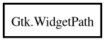

WidgetPath
Object Hierarchy:

Description:
[ CCode ( ref_function = "gtk_widget_path_ref" , type_id = "gtk_widget_path_get_type ()" , unref_function = "gtk_widget_path_unref" ) ]
[ Compact ]
public class WidgetPath
Content:
Creation methods:
Methods:
- public unowned WidgetPath @ref ()
- public int append_for_widget (Widget widget)
- public int append_type (Type type)
- public int append_with_siblings (WidgetPath siblings, uint sibling_index)
- public WidgetPath copy ()
- public void free ()
- public Type get_object_type ()
- public bool has_parent (Type type)
- public bool is_type (Type type)
- public void iter_add_class (int pos, string name)
- public void iter_add_region (int pos, string name, RegionFlags flags)
- public void iter_clear_classes (int pos)
- public void iter_clear_regions (int pos)
- public unowned string? iter_get_name (int pos)
- public unowned string? iter_get_object_name (int pos)
- public Type iter_get_object_type (int pos)
- public uint iter_get_sibling_index (int pos)
- public unowned WidgetPath iter_get_siblings (int pos)
- public StateFlags iter_get_state (int pos)
- public bool iter_has_class (int pos, string name)
- public bool iter_has_name (int pos, string name)
- public bool iter_has_qclass (int pos, Quark qname)
- public bool iter_has_qname (int pos, Quark qname)
- public bool iter_has_qregion (int pos, Quark qname, out RegionFlags flags)
- public bool iter_has_region (int pos, string name, out RegionFlags flags)
- public SList<unowned string> iter_list_classes (int pos)
- public SList<unowned string> iter_list_regions (int pos)
- public void iter_remove_class (int pos, string name)
- public void iter_remove_region (int pos, string name)
- public void iter_set_name (int pos, string name)
- public void iter_set_object_name (int pos, string? name)
- public void iter_set_object_type (int pos, Type type)
- public void iter_set_state (int pos, StateFlags state)
- public int length ()
- public void prepend_type (Type type)
- public string to_string ()
- public void unref ()